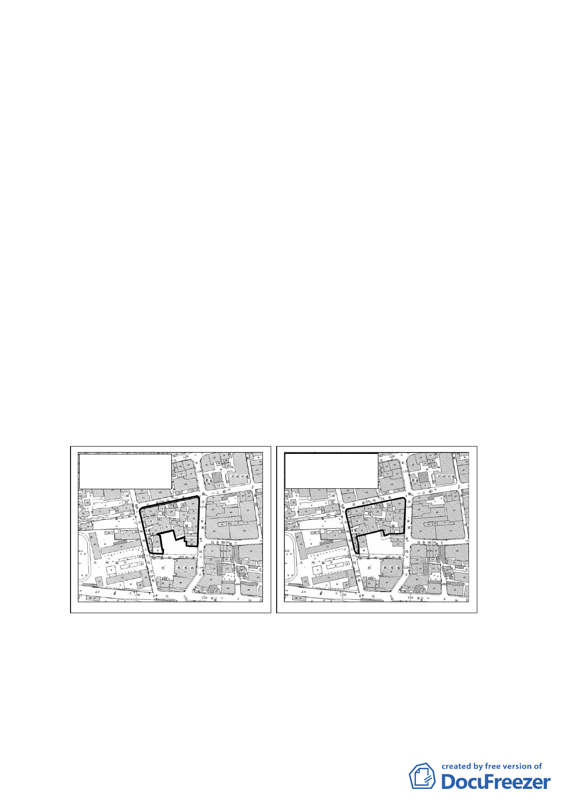

本案審議歷程：
一、本案原申請劃定面積為 5788 平方公尺，惟經市民陳情其業已進行該
案南側土地整合作業，目前擬申請開發之 19 筆地號土地中，部分地
號土地被劃入本案更新單元申請範圍內，陳情不願納入本案範圍。
二、本案經提本會 97 年 2 月 20 日第 579 次委員會議，市府針對上開陳
情意見於會中回應表示，略以：
（一）經分析所陳 19 筆土地，其中 11 筆土地係與本更新單元範圍重疊，
面積 1173 平方公尺。陳情人截至 97 年 1 月 30 日止已取得重疊範
圍土地 79.4%，其餘土地私人佔 20.2%，國有佔 0.4%，且多為陳
情人土地所包被，未來仍應合併鄰地辦理改建。
（二）考量陳情人已取得多數土地，為免後續更新整合困難及影響所有
權人權益，同意排除重疊之 11 筆土地，修正本案劃定範圍為文山
區木柵段三小段 124 等 37 筆土地，面積調整為 4615 平方公尺，
計畫案名亦配合修正。
（三）修正後更新單元劃定範圍亦符合更新單元劃定基準及評估指標。
原申請劃定範圍示意圖
⊙計48筆土地。
⊙面積5788平方公尺。
修正後劃定範圍示意圖
⊙計37筆土地。
⊙面積4615平方公尺。
四、惟是項會議因市府未能提出申請人同意縮小更新單元之證明文件，
為求程序周延，會議爰決議：「本案市府所提資料，有關經評估市民
陳情意見後，擬縮小更新單元範圍一節，為確保程序周延，請市府
提出申請者同意前項修正內容之書面文件後，再提會討論」。
6